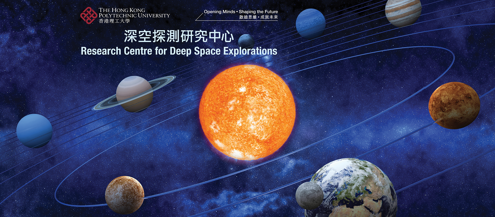

Advisory Board Chair
Prof. K.L. Yung
Research Centre for Deep Space Explorations, The Hong Kong Polytechnic University
Research · Collaboration · Exploration
APRIM2026 Satellite Meeting aims to build a focused platform for exchange among researchers working at the intersection of astronomy, planetary science, robotics, autonomy, and precision engineering for future space missions.
Robotics · Autonomy · Instrumentation
The meeting highlights research and development in space robotics, autonomous systems, ultra-precision engineering, and technologies for lunar, planetary, and small body exploration.
This one-day satellite meeting is organized in conjunction with the Asia-Pacific Regional IAU Meeting (APRIM2026) to be held in Hong Kong. The meeting focuses on the intersection of precision engineering, space robotics, autonomous systems, and astronomical research, with particular emphasis on lunar, planetary, and small body exploration missions.
The meeting will leverage The Hong Kong Polytechnic University’s strengths in precision engineering, space instrumentation, autonomous navigation, robotics, and deep space exploration to create a platform for knowledge exchange among astronomers, engineers, and space scientists from the Asia-Pacific region and beyond.
| Time | Activity |
|---|---|
| 08:30 - 09:00 | Registration |
| 09:00 - 09:05 | Welcome Address (invitation to PolyU senior management level) |
| 09:05 - 09:10 | Opening Remarks — Prof. K.L. Yung, Chair of Advisory Board |
| 09:10 - 09:55 | Plenary Talk 1: Robotic and Autonomous Systems for Space Exploration — TBD |
| 09:55 - 10:15 | Coffee Break and Networking |
| 10:15 - 11:00 | Plenary Talk 2: Precision Engineering Challenges in Space Missions — TBD |
| 11:00 - 12:30 | Session 1: Space Robotics and Autonomous Systems (4–5 talks, 15–20 minutes each), chaired by Prof. Weisong Wen |
| 12:30 - 14:00 | Lunch and Networking |
| 14:00 - 14:45 | Laboratory Visits |
| 14:45 - 15:30 | Plenary Talk 3: Small Body Exploration: Robotics and Autonomy Challenges — TBD |
| 15:30 - 15:50 | Coffee Break and Networking |
| 15:50 - 16:35 | Plenary Talk 4 — Prof. Yung |
| 16:35 - 18:05 | Session 2: Precision Instrumentation for Space Science (4–5 talks, 15–20 minutes each) |
| 18:05 - 18:10 | Closing Remarks and Summary — Prof. Benny Cheung |
| 18:10 - 20:00 | Dinner (By invitation only) |
Speaker information will be updated as confirmations are received.
Director of Research Centre of Deep Space Explorations; Sir Sze-yuen Chung Professor in Precision Engineering; Chair Professor of Precision Engineering and Associate Head, The Hong Kong Polytechnic University
Role: Opening Remarks / Plenary Talk 4
Bio: Prof. K.L. Yung is a leading scholar in precision engineering and deep space exploration. His work focuses on precision engineering, space instrumentation, and advanced technologies for deep space missions.
Chair Professor of Ultra-precision Machining and Metrology; Director of State Key Laboratory of Ultra-precision Machining Technology, The Hong Kong Polytechnic University
Role: Closing Remarks
Bio: Prof. Benny C.F. Cheung specializes in ultra-precision machining, precision metrology, instrumentation, and smart precision manufacturing, with additional research in knowledge and technology management.
 Program Chair
Program Chair
Assistant Professor, Department of Aeronautical and Aviation Engineering, The Hong Kong Polytechnic University
Role: Chair, Session 1
Bio: Prof. Weisong Wen works on multi-sensory integrated positioning, GNSS, LiDAR-aided GNSS positioning, LiDAR/Visual SLAM, autonomous navigation, and safety-assured autonomous systems for robotics and intelligent vehicles.

Invited SpeakerThe Chinese University of Hong Kong
Talk: Talk title to be updated
Bio: Short biography to be updated.
The Hong Kong University of Science and Technology
Talk: Talk title to be updated
Bio: Short biography to be updated.
Carnegie Mellon University
Talk: Talk title to be updated
Bio: Short biography to be updated.
The Hong Kong Polytechnic University
Talk: Talk title to be updated
Bio: Short biography to be updated.
The Chinese University of Hong Kong
Talk: Talk title to be updated
Bio: Short biography to be updated.
The Chinese University of Hong Kong
Talk: Talk title to be updated
Bio: Short biography to be updated.
Research Centre for Deep Space Explorations, The Hong Kong Polytechnic University
State Key Laboratory of Ultra-precision Machining Technology, The Hong Kong Polytechnic University
Department of Aeronautical and Aviation Engineering, The Hong Kong Polytechnic University
Additional scientific committee members will be added here later.
Contact information will be announced soon.
For updates regarding registration, invited speakers, and participation, please revisit this page.